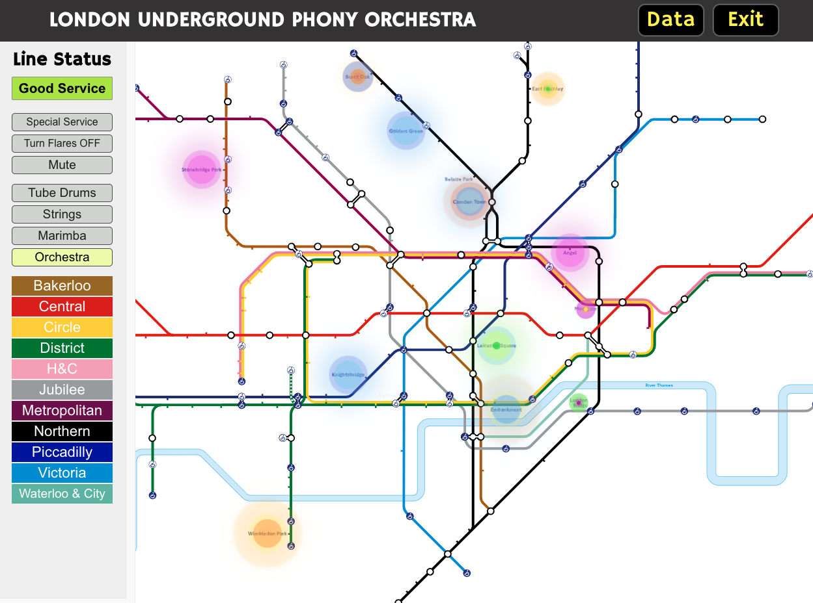
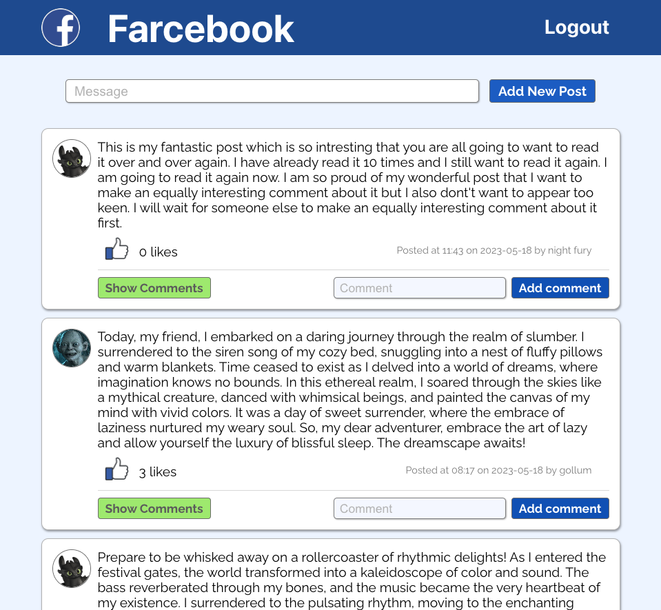
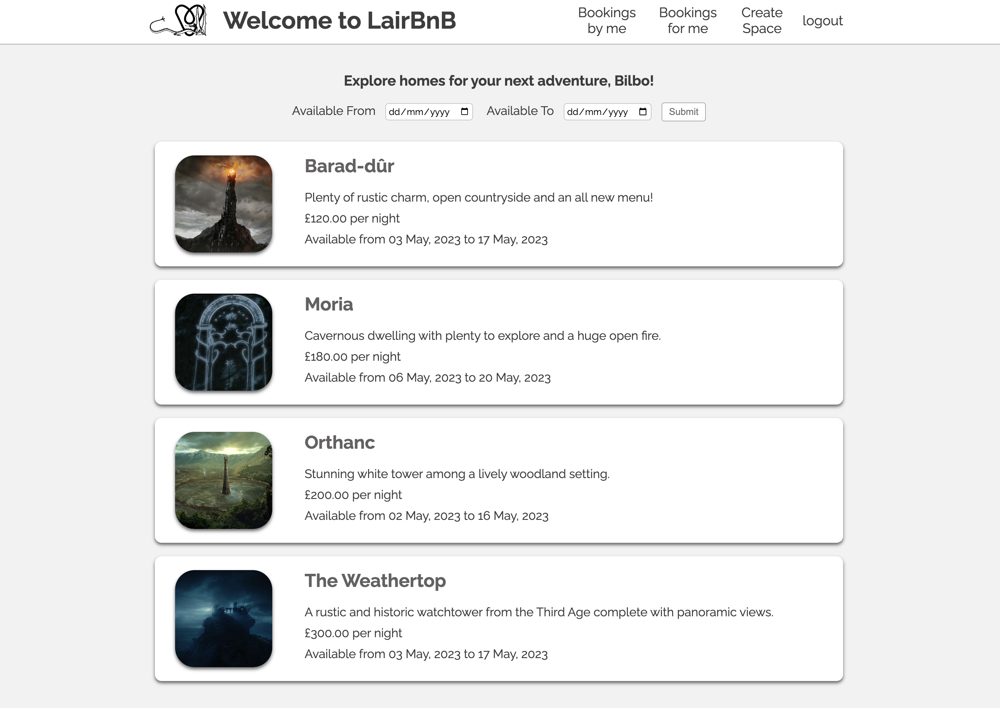
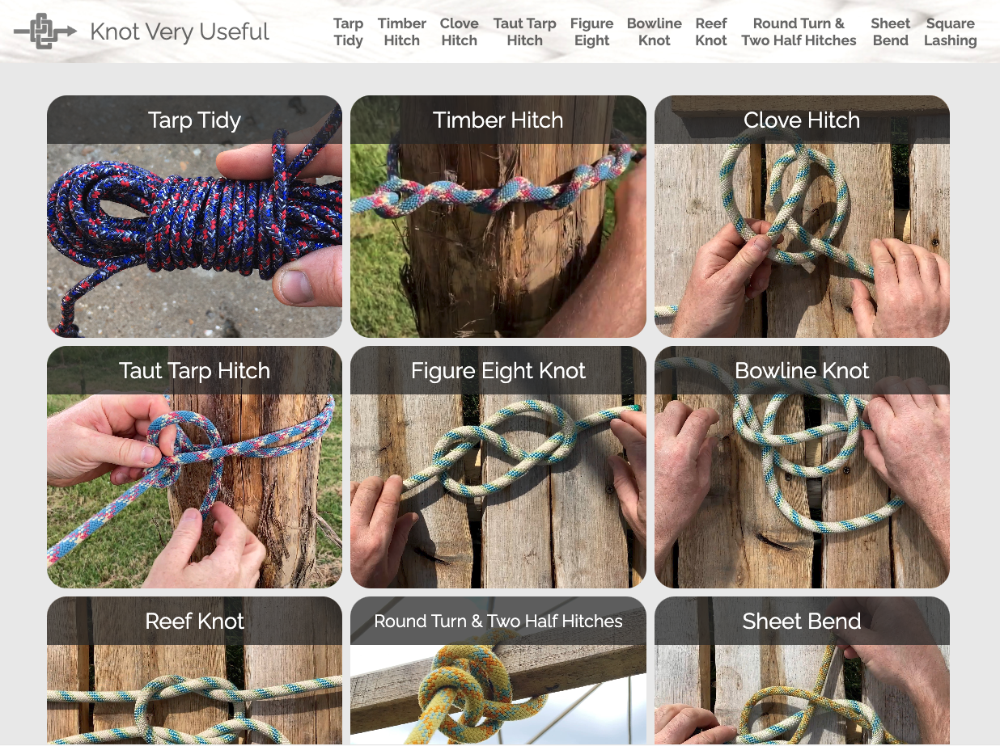
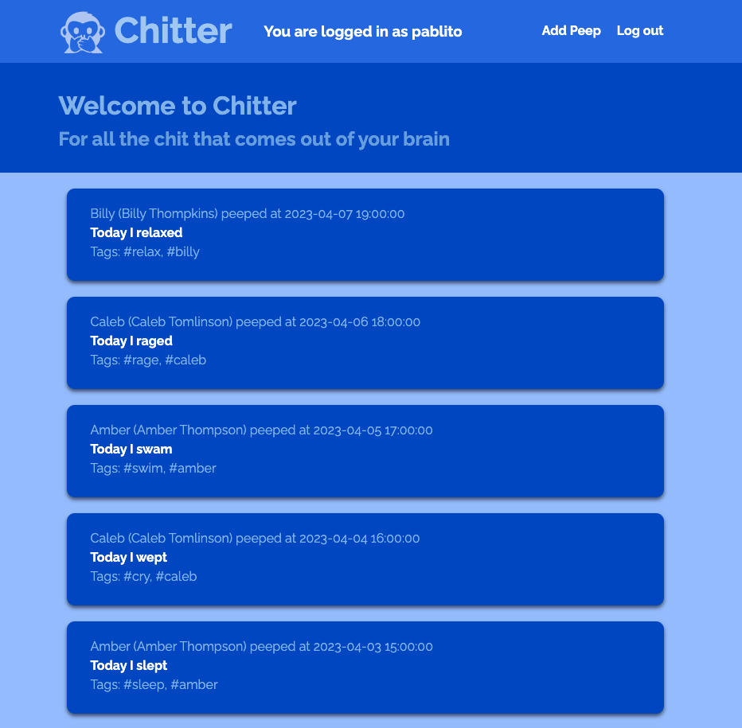

-

LUPO
-

Farce Book
-

Lair BnB
-

Knot Very Useful
-
 Picture Pad
Picture Pad -

Chitter App
Description: A generative music app based on real-time arrivals of trains on the London Underground network using data from the TFL Unified API. Each tube line is assigned an instrument and each station assigned a different note. LUPO is the outcome of my final group engineering project on the Makers Software Development bootcamp. The app was designed and coded entirely from scratch as a group collaboration. It was designed and built in eight days by five students.
Technologies: The app is primarily built in JavaScript using the React.js library. We relied heavily on tone.js for the audio side of things which was new to all in the group. We also learnt chart.js when we discovered an urgent need to visualise TFL's dubious data. We, of course used Git and GitHub throughout as well as Postman.
Click on the TO TRAINS icon to go to the main page, then tap in to start your journey.